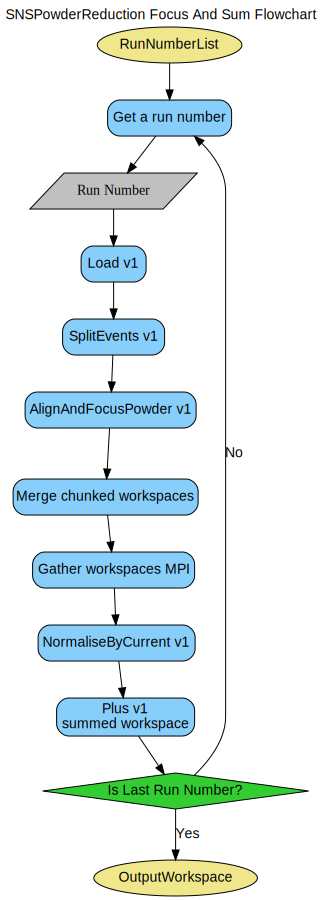
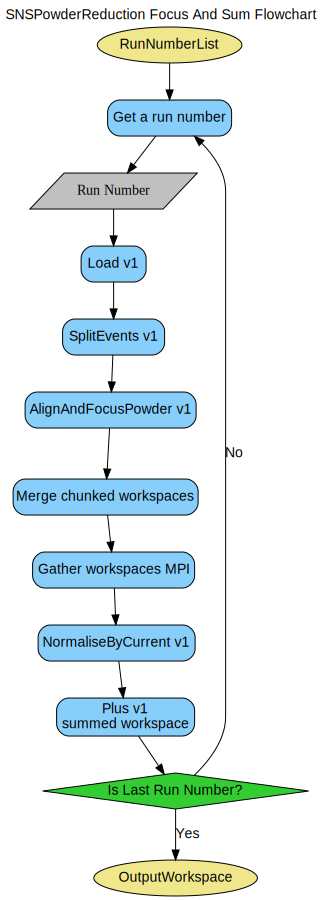

\(\renewcommand\AA{\unicode{x212B}}\)

SNSPowderReduction dialog.
Table of Contents
The algorithm used for reduction of powder diffraction data obtained on SNS instruments (e.g. PG3)
| Name | Direction | Type | Default | Description |
|---|---|---|---|---|
| Filename | Input | list of str lists | Mandatory | Files to combine in reduction. Allowed extensions: [‘_event.nxs’, ‘.nxs.h5’] |
| PreserveEvents | Input | boolean | True | If the InputWorkspace is an EventWorkspace, this will preserve the full event list (warning: this will use much more memory!). |
| DMin | Input | dbl list | Minimum for Dspace axis. (Default 0.) | |
| DMax | Input | dbl list | Maximum for Dspace axis. (Default 0.) | |
| DeltaRagged | Input | dbl list | Step parameter for rebin | |
| Sum | Input | boolean | False | Sum the runs. Does nothing for characterization runs |
| PushDataPositive | Input | string | None | Add a constant to the data that makes it positive over the whole range. Allowed values: [‘None’, ‘ResetToZero’, ‘AddMinimum’] |
| BackgroundNumber | Input | long list | 0 | If specified overrides value in CharacterizationRunsFile If -1 turns off correction. |
| VanadiumNumber | Input | long list | 0 | If specified overrides value in CharacterizationRunsFile. If -1 turns off correction. |
| VanadiumBackgroundNumber | Input | long list | 0 | If specified overrides value in CharacterizationRunsFile. If -1 turns off correction. |
| CalibrationFile | Input | string | Allowed extensions: [‘.h5’, ‘.hd5’, ‘.hdf’, ‘.cal’] | |
| GroupingFile | Input | string | Overrides grouping from CalibrationFile. Allowed extensions: [‘.xml’] | |
| CharacterizationRunsFile | Input | list of str lists | File with characterization runs denoted. Allowed values: [‘txt’] | |
| ExpIniFilename | Input | string | Allowed extensions: [‘.ini’] | |
| LorentzCorrection | Input | boolean | False | Multiply each spectrum by sin(theta) where theta is half of the Bragg angle |
| UnwrapRef | Input | number | 0 | Reference total flight path for frame unwrapping. Zero skips the correction |
| LowResRef | Input | number | 0 | Reference DIFC for resolution removal. Zero skips the correction |
| CropWavelengthMin | Input | number | 0 | Crop the data at this minimum wavelength. Overrides LowResRef. |
| CropWavelengthMax | Input | number | Optional | Crop the data at this maximum wavelength. Forces use of CropWavelengthMin. |
| RemovePromptPulseWidth | Input | number | 0 | Width of events (in microseconds) near the prompt pulse to remove. 0 disables |
| MaxChunkSize | Input | number | 0 | Specify maximum Gbytes of file to read in one chunk. Default is whole file. |
| Binning | Input | dbl list | 0,0,0 | Positive is linear bins, negative is logorithmic |
| ResampleX | Input | number | 0 | Number of bins in x-axis. Non-zero value overrides “Params” property. Negative value means logarithmic binning. |
| BinInDspace | Input | boolean | True | If all three bin parameters a specified, whether they are in dspace (true) or time-of-flight (false) |
| StripVanadiumPeaks | Input | boolean | True | Subtract fitted vanadium peaks from the known positions. |
| VanadiumFWHM | Input | number | 7 | Default=7 |
| VanadiumPeakTol | Input | number | 0.05 | How far from the ideal position a vanadium peak can be during StripVanadiumPeaks. Default=0.05, negative turns off |
| VanadiumSmoothParams | Input | string | 20,2 | Default=20,2 |
| VanadiumRadius | Input | number | 0.3175 | Radius for CarpenterSampleCorrection |
| BackgroundSmoothParams | Input | string | Default=off, suggested 20,2 | |
| FilterBadPulses | Input | number | 95 | Filter out events measured while proton charge is more than 5% below average |
| ScaleData | Input | number | 1 | Constant to multiply the data before writing out. This does not apply to PDFgetN files. |
| OffsetData | Input | number | 0 | Constant to add to the data before writing out. This does not apply to PDFgetN files. |
| SaveAs | Input | string | gsas | List of all output file types. Allowed values are ‘fullprof’, ‘gsas’, ‘nexus’, ‘pdfgetn’, and ‘topas’ |
| OutputFilePrefix | Input | string | Overrides the default filename for the output file (Optional). | |
| OutputDirectory | Input | string | Mandatory | |
| CacheDir | Input | string | comma-delimited ascii string representation of a list of candidate cache directories | |
| CleanCache | Input | boolean | False | Remove all cache files within CacheDir |
| FinalDataUnits | Input | string | dSpacing | Allowed values: [‘dSpacing’, ‘MomentumTransfer’] |
| TypeOfCorrection | Input | string | None | Specifies the Absorption Correction terms to calculate, if any. Allowed values: [‘None’, ‘SampleOnly’, ‘SampleAndContainer’, ‘FullPaalmanPings’] |
| SampleFormula | Input | string | Chemical formula of the sample | |
| SampleGeometry | Input | Dictionary | null | A dictionary of geometry parameters for the sample. |
| MeasuredMassDensity | Input | number | 0.1 | Measured mass density of sample in g/cc |
| SampleNumberDensity | Input | number | Optional | Number density of the sample in number of atoms per cubic Angstrom will be used instead of calculated |
| ContainerShape | Input | string | PAC06 | Defines the container geometry |
| ContainerScaleFactor | Input | number | 1 | Factor to scale the container data |
| ElementSize | Input | number | 1 | The size of one side of an integration element cube in mm |
| NumWavelengthBins | Input | number | 1000 | Number of wavelength bin to calculate the for absorption correction |
| SplittersWorkspace | Input | Workspace | Splitters workspace for split event workspace. | |
| SplitInformationWorkspace | Input | TableWorkspace | Name of table workspace containing information for splitters. | |
| LowResolutionSpectraOffset | Input | number | -1 | If larger and equal to 0, then process low resolution TOF and offset is the spectra number. Otherwise, ignored. |
| NormalizeByCurrent | Input | boolean | True | Normalize by current |
| CompressTOFTolerance | Input | number | 0.01 | Tolerance to compress events in TOF. |
| FrequencyLogNames | Input | str list | SpeedRequest1,Speed1,frequency,skf1.speed | Candidate log names for frequency |
| WaveLengthLogNames | Input | str list | LambdaRequest,lambda,skf12.lambda,BL1B:Det:TH:BL:Lambda,freq | Candidate log names for wave length |
There are three properties which will modify the data after it is
reduced: PushDataPositive, ScaleData, OffsetData. These
options are all performed on the data after all other operations. They
will be done as
followed by ResetNegatives with
AddMinimum being True if
PushDataPositive='AddMinimum'. ResetNegatives is not run when PushDataPositive='None'.
Filter wall is enabled by setting FilterCharacterizations property
to true. Then the _getTimeFilterWall routine is used to build the
filter wall from the data defined by SplitInformationWorkspace and
SplittersWorkspace properties. Time filter wall is used in
_loadData to load data in a certain range of time. Here is how the
filter is used:
NONEwall[0] is
ZEROwall[1] is
ZEROMore information is found in Event Filtering.
There are two properties related to calibration (CalibrationFile
and GroupingFile) and three implicit workspace dependencies
(<instrument>_mask, <instrument>_group, and
<instrument>_cal). If the workspaces do not exist, they will be
created during the algorithm’s execution.
If specified, the CalibrationFile is loaded using
LoadDiffCal v1. If the GroupingFile is specified, the
grouping it specifies takes precedence over the one that is in the
CalibrationFile. LoadDetectorsGroupingFile v1 performs
the loading. The order of preference in which to use is (first found wins):
<instrument>_cal, then CalibrationFile<instrument>_group workspace, then GroupingFile,
then CalibrationFile<instrument>_mask, then CalibrationFileAlignAndFocusPowder v1 does the actual resolution of which information to use.
The CharacterizationRunsFile, ExpIniFilename,
BackgroundNumber, VanadiumNumber, VanadiumBackgroundNumber
all contribute to determine which runs to use for background
subtraction and normalization. Specifying the various *Number
properties as 0, indicates using the values found in the
files. Specifying -1 indicates to not do the corrections at
all. The files are loaded using PDLoadCharacterizations v1
which also contains the focus positions. Which runs to used are
determined by PDDetermineCharacterizations v1.
The result of time-consuming tasks that need not be repeated, such as calculating the absorption correction of a sample for every value of the temperature in a heating experiment, can be stored as cache files in a cache directory. These cache files will be loaded if property CacheDir is set. User can clean the cache files by setting property CleanCache to reclaim drive space or to prevent accidental misuse, such as reducing with an instrument of a different geometry and/or calibration. Cleaning the cache takes place immediately before reduction.
This is a worksflow algorithm used to process and the results of powder diffraction scattering experimens on SNS instruments. Processing data from instruments not at SNS is unsupported. Sample usage can be found in the system tests.
Categories: AlgorithmIndex | Diffraction\Reduction
Python: SNSPowderReduction.py


 
